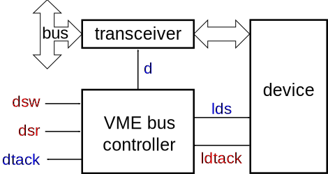
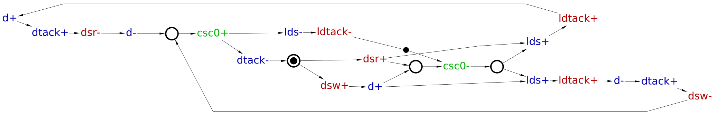
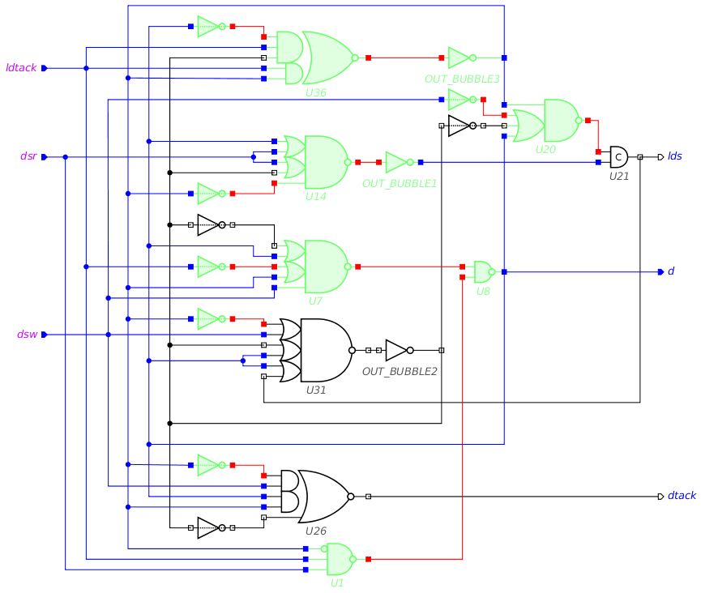

Table of Contents
Synthesis and verification of VME bus controller
A controller for VME bus provides an interface between a data bus and a slave device, as shown in the following diagram.

The controller has two modes of operation: reading from the device into the bus (activated by dsr+) and writing from the bus into the device (activated by dsw+).
In the reading mode, a request to read data form the device is made through lds+. When the device has the data ready and this is acknowledged by ldtack+, the controller opens the transceiver by d+ and notifies the bus that data is ready for transfer by dtack+. After the read operation is complete, all the signals return to the initial state.
In the writing mode, once the data is stable on the bus, the transceiver is opened by d+, and the write request is made by lds+. When the device acknowledges the receipt of data by ldtack+, the transceiver is closed with d-, thus isolating the device from the bus, and the bus is notified that the write operation is complete by dtack+. After that all the signals return to the initial state.
These two modes of VME control are captured by the following timing diagrams.
 |
| Timing diagram for the read mode |
 |
| Timing diagram for the write mode |
Modelling
Model the read mode of VME controller with an STG. Create a new STG work called stg-vme-read and capture the sequence of events of the corresponding timing diagram.
Do the same for the write mode of VME bus control, in a separate STG work called stg-vme-write.
The result should be similar to the following STGs.
 |
| STG for read operation |
 |
| STG for write operation |
The two STGs describe the behaviour of the same circuit and need to be combined into one specification by merging their initial states. Create a new STG work called stg-vme-read_write and copy-paste the STGs from stg-vme-read and stg-vme-write works into it. Merge places p1r and p1w into a single place by first selecting them (hold Shift and click them with the mouse) and then using the Transformations→Merge selected places menu item. Rename the resulting place to p1. Similarly, merge p2r and p2w and rename the resulting place to p2. The result should look as follows.
 |
| Combined STG for read and write scenarios |
Note that place p2 is a controlled choice whose decision is determined by the free choice place p1.
Note the concurrency between the transitions resetting the device (lds- and ldtack-) and the new requests from the bus (dsr+ and dsw+): A new request can arrive while the device is still resetting, thereby allowing concurrent operation of the bus and the device. This concurrency is the “meaning of life” of VME bus controller.
Optional simplification
Once the initially marked places are merged, one can notice that transitions ldtack-, lds- and dtack- occur in both branches of the choice and can be merged. Here is the simplified STG.
 |
| Simplified STG for read and write scenarios |
Validation and formal verification of the STG specification
Validation
Activate the simulation tool ![[M] Simulate](../../help/editor_tools-simulate.png "[M] Simulate") and exercise the obtained STG model to better understand the behaviour of VME bus controller. Click one of the enabled signal transitions (they are highlighted in orange) to fire it. Note that the sequence of fired transitions is recorded in the simulation trace that is somewhat similar to the original timing diagram. Check that the simulation traces correspond to the intended behaviour of VME bus controller.
and exercise the obtained STG model to better understand the behaviour of VME bus controller. Click one of the enabled signal transitions (they are highlighted in orange) to fire it. Note that the sequence of fired transitions is recorded in the simulation trace that is somewhat similar to the original timing diagram. Check that the simulation traces correspond to the intended behaviour of VME bus controller.
Formal verification
Verify that the STG specification satisfies the following properties using Verification menu:
- Deadlock freeness – every reachable marking enables at least one transition.
- Consistency – the '+' and '-' transitions of every signal alternate in every execution, always starting with the same sign.
- Input properness – an input cannot be disabled by an output or internal signal, and cannot be triggered by an internal signal.
- Output persistency – an enabled output or internal signal cannot be disabled by any other signal.
These are basic soundness properties which should be satisfied by most models – Verification menu has an entry that can check all these properties with a single click.
Now check whether the STG satisfies the Complete State Coding (CSC) property using Verification→Complete State Coding (all cores) [MPSat] menu item. This STG does not have CSC, which means there are two reachable states that have the same value of all signals but enable different outputs. These states are said to be in CSC conflict. Specifications with CSC conflicts cannot be directly implemented as circuits. One way of resolving CSC conflicts is to insert new internal signals into the STG. These internal signals add memory into the circuit helping it to trace the current state. More about CSC conflicts and resolving them can be found in another tutorial.
Synthesis
Note that the synthesis solutions shown in this section are not unique and you may get a slightly different results.
Resolve the CSC conflicts automatically using Petrify via Tools→Encoding conflicts→Resolve CSC conflicts [Petrify] menu. Petrify will insert a new internal signal csc0 distinguishing between conflicting states. The result could look like the following STG:

The obtained STG specification has CSC and can now be synthesised into an asynchronous circuit. A complex-gate solution obtained via Synthesis→Complex gate [MPSat] is as follows circuit-vme-cg.work (5.33 KiB):

This solution uses complex gates that do not usually exist in real gate libraries. Such gates need to be decomposed, so they can be mapped into the existing library gates – this is done by technology mapping. Note that speed-independence of the circuit must be preserved during decomposition.
The library of available gates can be passed to Workcraft in SIS GenLib format via Digital circuit→Gate library for technology mapping option in global settings (Edit→Preferences…). By default libraries/workcraft.lib is used. It defines a representative set of gates found in several modern gate libraries and also C-elements and uses a generalised naming convention for gates and pins.
The results of technology mapping into libraries/workcraft.lib gate library via Synthesis→Technology mapping [MPSat] is as follows circuit-vme-tm.work (9.28 KiB):

A circuit can be exported to Verilog via File→Export…→.v (Workcraft Verilog serialiser) menu. By default the produced Verilog uses the names of gates and pins as they are defined in the GenLib file. These names can be substituted by providing a conversion file in Digital Circuit→Substitution rules for export global preferences. For example, libraries/workcraft-tsmc_ghp.cnv file has rules to convert librarys/workcraft.lib gates to match the naming convention of TSMC GHP library.
Verification of the circuit implementation
Make sure that the original STG describing the contract with the environment and the circuit model is set up:
- In the circuit editor make sure that no components are selected (click on the editor canvas).
- In the property editor the Environment URI property should point to the work file with the original STG specification.
For circuits synthesised within Workcraft this property is automatically set up to the STG that was used for synthesis, i.e. in this case to the STG with internal signals inserted to resolve CSC conflicts. You should modify it to point to the original STG.
Use the Verification menu to verify that the circuit implementation is:
- conforms to the original STG specification;
- deadlock-free;
- output persistent.
All these verification steps can be run via Verification→Conformation, deadlock and output persistency (reuse unfolding) [MPSat] menu.
In theory, synthesised circuits are correct-by-construction. In practice, the synthesis tools are very complicated and may have bugs, so formally verifying the circuits is essential. This is especially true if the circuit was edited manually.
Optional
Decompose one of the complex gates by splitting it into simple gates and verify the circuit for output persistency. If a violation of output persistency is reported (most likely it will be), then play back the trace leading to the problematic state to better understand why the naive decomposition does not work.
Initialisation
Initialisation (or reset) of a speed-independent circuit is a crucial part of the design process because a circuit can malfunction if its initial state is incorrect. There are several ways of circuit initialisation, that are usually used in combination:
- Rely on the initial state of the circuit inputs that propagate through the logic gates to initialise the internal and output signals.
- Substitute sequential gates with their set/reset counterparts that are initialised to
1/0respectively. - Insert additional gates to explicitly initialise the internal and output signals.
Use the Initialisation analyser ![[I] Initialisation analyser](../../help/editor_tools-initialisation_analysis.png "[I] Initialisation analyser") tool to decide how to properly reset the VME bus controller obtained by technology mapping.
tool to decide how to properly reset the VME bus controller obtained by technology mapping.
The wires and pins whose initial state is guaranteed to be 0 or 1 are coloured blue or red respectively; initially undefined wires and pins are not colourised.
Let us assume that the circuit inputs are guaranteed to be in a correct state (all zeros) by the environment – click on each input port to indicate this. Those gates that are initialised correctly through the primary inputs are highlighted green.

Now let us rely on C-element U21 being explicitly reset – click its output pin to indicate this. Notice that the output pin has a diamond shape now. This is to visualise the forced initialisation of the gate output (e.g. by replacing it by a C-element with explicit reset).
All the gates should be highlighted green now indicating that they are transitively initialised to the correct state.
If there were initialisation conflicts, the problematic gates would be highlighted in orange.
Solutions
Download all the Workcraft models discussed in this section here:
VME bus controller models (32.84 KiB)
===== Feedback =====
- As discussed in https://www.dokuwiki.org/plugin:include#controlling_header_size_in_included_pages, by default, the headers in included pages start one level lower than the last header in the current page. This can be tweaked by adding an empty header above the include:\\
====== ====== {{page>:tutorial:feedback&inline}} - For offline help generation the content of
feedbackpage should be temporary wrapped in<WRAP hide>. Note that the headers still propagate to the table of contents even if inside the hidden wrap. Therefore the Feedback title needs to be converted to something else, e.g. to code by adding two spaces in front.